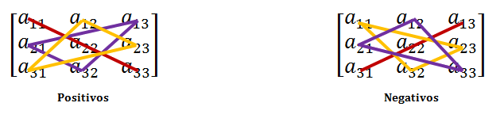

Se llama permutación de n-elementos a la distintas maneras de ordenarlos.
Se llama permutación principal de los n primeros números a la que mantiene su orden, es decir, (1,2,3,...,n). Como ya sabrás, hay n! permutaciones de n-elementos.
Se llama inversión a cada una de los cambios de posición de dos elementos con respecto a la permutación principal.
Una permutación se dice par si es producto de un número par de inversiones, e impar si lo es de un número impar.
Sea A una matriz cuadrada de orden n, se llama determinante de A y lo notaremos
|A| = det(A) = ∑ ( − 1)tai1j1 · ai2j2 · .......·ainjn, donde t es el número de inversiones para pasa de α = (i1, i2,..., in) a β = (j1, j2,..., jn). Hay n! sumandos, la mitad con signo positivo y la otra mitad con negativo.
Determinante de orden dos.-
| |A| |
= |
| |
a11 |
a12 |
| |
= |
a11 · a22− a12 · a21 |
| a21 |
a22 |
Determinante de orden 3.-
| |A| |
= |
| |
a11 |
a12 |
a13 |
| |
= |
a11 · a22 · a33+ a12 · a23 · a31+ a21 · a32 · a13− a13 · a22 · a31− a12 · a21 · a33− a11 · a32 · a23. |
| a21 |
a22 |
a23 |
| a31 |
a32 |
a33 |
Para recordar esta regla llamada de Sarrus, basta con tener orientación positiva y negativa;

Propiedades de los determinantes.-
- El determinante de la matriz nula es 0 y el de la Identidad es 1.
- El determinante de una matriz es igual al de su traspuesta.
- Si permutamos dos filas o columnas, el determinante cambia de signo.
- Si una matriz tiene dos filas o columnas iguales, su determinante vale 0.
- Si todos lo elementos de una fila (o columna) son cero, el determinante vale 0.
- Si dos filas son proporcionales, entonces el determinante vale 0.
- Si se multiplican todos los elementos de una línea por un número, el determinante queda multiplicado por ese número.
- El determinante de una matriz triangular es el producto de los elementos de su diagonal principal.
- Si todos los elementos de una fila se descomponen en suma de dos sumandos, el determinante es suma de otros dos determinantes.
- Si una fila es combinación de otras dos, el determinante no varia.
- Si a los elementos de una línea se le suman los elementos de otra paralela a ella, multiplicada previamente por un número, el valor del determinante no varía.
Una matriz se dice regular si su determinante es no nulo.
Si la matriz es de orden mayor a tres, se utilizan estas propiedades para conseguir ceros y aplicar el desarrollo por sus adjuntos mucho mś facilmente (Regla de Chio).